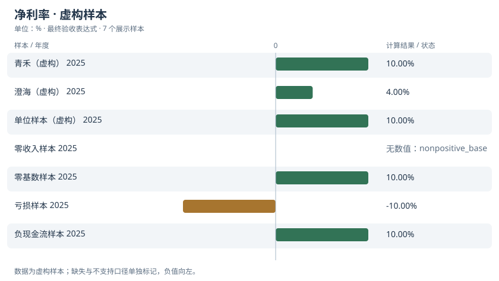

candidate-1候选版本
参考验证：16/48 · AST 节点：8
safe_div(revenue, net_profit)
固定演示策略：先提出含已知缺陷的候选以展示验证流程
依赖：net_profit, revenue
METRIC DELIVERY / 可追溯交付
RUN demo-net_margin
财务数据及公司为虚构教学样本；replay为固定策略，不是模型效果评测。
当期合并口径净利润除以营业收入；返回比率，展示时乘100并标记%
收入须为正；允许净利润为负；缺字段不以0替代；年度/CNY/合并口径
参考验证：16/48 · AST 节点：8
safe_div(revenue, net_profit)
固定演示策略：先提出含已知缺陷的候选以展示验证流程
依赖：net_profit, revenue
参考验证：48/48 · AST 节点：8
safe_div(net_profit, revenue)
固定演示策略：应用预先定义的正确表达式
依赖：net_profit, revenue
{
"case": {
"id": "normal-a",
"current": {
"company": "青禾（虚构）",
"year": 2025,
"currency": "CNY",
"unit": "CNY_10K",
"scope": "consolidated",
"revenue": "0.00048828125",
"net_profit": "0.0009765625",
"operating_cashflow": null,
"source": "fixture:a:2025"
},
"previous": {
"company": "青禾（虚构）",
"year": 2024,
"currency": "CNY",
"unit": "CNY_10K",
"scope": "consolidated",
"revenue": null,
"net_profit": null,
"operating_cashflow": null,
"source": "fixture:a:2024"
},
"origin": "shrunk"
},
"category": "value_mismatch",
"expected": {
"status": "ok",
"value": "2",
"sources": [
"fixture:a:2025"
]
},
"actual": {
"status": "ok",
"value": "0.5",
"sources": [
"fixture:a:2025"
]
}
}
数据版本：metricforge-fictional-v1；种子：20261012；用例：48